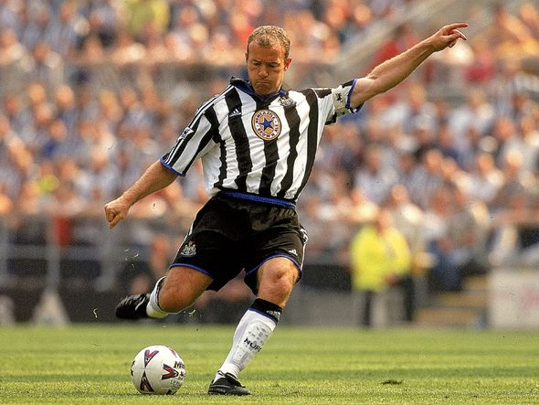

Football, also known as soccer, has a long and fascinating history that spans thousands of years and several continents. Here is a brief overview of the history of football:
 "This picture of a englands greatest forward Alan shearer"
Ancient Times:
The earliest known form of football dates back to ancient civilizations such as China, Greece, and Rome, where games involving kicking a ball or something similar were played. In China, a game called "cuju" was played, which involved players kicking a ball through a small hole in a net.
Middle Ages:
During the Middle Ages in Europe, a variety of ball games were played, many of which involved kicking a ball between villages or across fields. Some of these games were quite violent and often resulted in injuries or even death.
Renaissance:
In the 16th century, football began to take on a more organized form in England. Schools and universities began to develop their own set of rules for the game, which would eventually become the basis for modern football.
19th Century:
In the 1800s, the game of football began to spread beyond England to other parts of Europe and to South America. The first football club, Sheffield FC, was formed in England in 1857. In 1863, the Football Association (FA) was established in England, which standardized the rules of the game and established the first international football competition.
20th Century:
Football continued to grow in popularity throughout the 20th century, with the first World Cup taking place in 1930 and becoming one of the biggest sporting events in the world. The formation of major leagues and clubs, such as the English Premier League and the Spanish La Liga, further increased the global popularity
The origins of rugby can be traced back to England in the early 19th century, where it was played as a variation of football. Over time, the game evolved to become its own distinct sport, with its own set of rules and regulations.